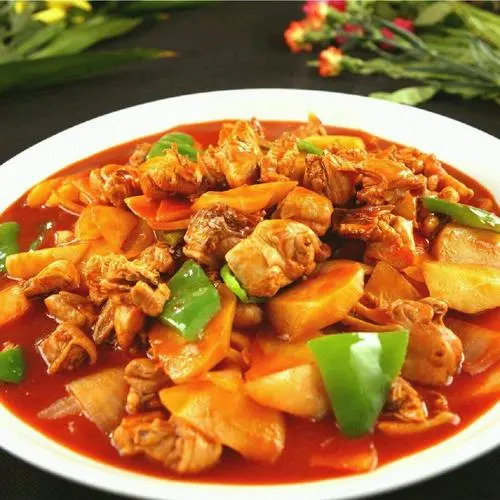

Recipe Detail
Recipe Detail
BigPlate Chicken

Required ingredients
List of ingredients
- 500g Chicken thighs or drumsticks
- 200g Hand-pulled noodles (or wide flat noodles)
- 2 Potatoes, sliced into thin wedges
- 3 cloves Garlic, minced
- 1 Onion, sliced
- 2 tbsp Light soy sauce
- 2 tbsp Dark soy sauce
- 2 tsp Sugar
- 1 cup Chicken broth or water
- 2-3 dried Red chili peppers
Other
-
- Difficulty level: difficult
- Required time: 30min
Steps
- In a wok or large skillet, heat the vegetable oil over medium-high heat. Add the chicken pieces and brown on all
sides. Remove and set aside.
- In the same wok, sauté the onions and garlic until they are soft and fragrant.
- Return the chicken to the wok and add soy sauces, sugar, star anise, cinnamon, bay leaves, Szechuan peppercorns,
dried chilies, and cumin seeds. Stir-fry for a couple of minutes.
- Add the chicken broth or water, ensuring the chicken is almost covered. Bring to a boil, then reduce the heat to
medium-low and simmer for about 20 minutes.
- Add the potato wedges to the wok and continue simmering until both the chicken and potatoes are fully cooked.
- In a separate pot, cook the noodles according to package instructions until al dente. Drain and add them to the wok,
stirring gently to coat the noodles in the sauce.
- Transfer to a large plate or serving dish. Garnish with chopped coriander and green onions.
- Serve hot and enjoy!